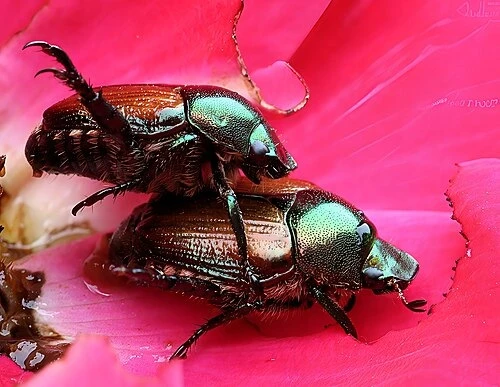
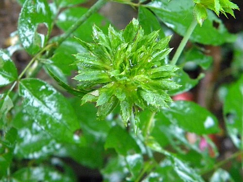
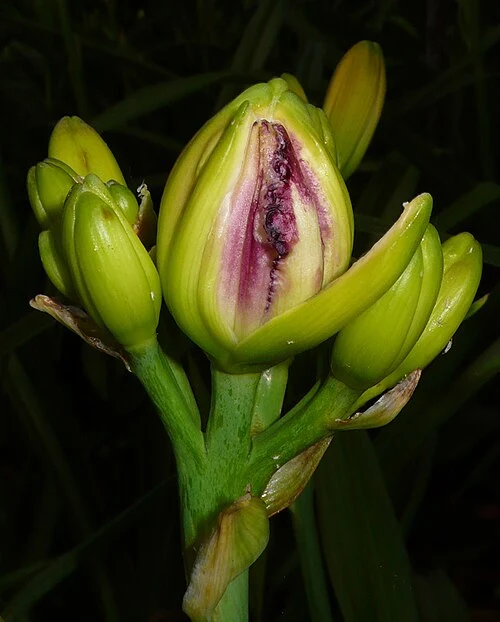

Flower problems

Soft, rotting flowersInspect overlapping petals for water-soaked tissue. Compare newly opened flowers with older blooms.

Dry, brown flowersIs browning confined to older blooms? Check unopened buds and the leaves on the same stem.

Wilting flowersCheck the flower stalk, the moisture deeper in the pot and whether the foliage is drooping too.

Caterpillars on flowersLook behind petals and around buds for larvae, irregular bites or pellet-like droppings.

Beetles on flowersLook for beetles actually chewing petals. Record their shape and when they visit.

Snouted beetles on buds and drooping flower budsLook just below a drooping unopened bud. Check whether the short stalk is partly cut and whether a small beetle with a snout is present on nearby buds.

A new rosebud grows out of an open bloomAn apparently finished flower produces another bud through its centre. Following the base of the new bud helps tell true proliferation from overlapping flower stems.

Green leaflets replace parts of a roseWhen parts inside a normally coloured rose take the shape of leaves, inspect the next flush before deciding whether the change is persistent.

Daylily buds become squat and swollenA single daylily stem may carry both slender buds and stunted swollen ones. Opening one misshapen bud is a practical way to check for feeding larvae.

Brown knobbly clusters persist on ash treesDry brown masses that become conspicuous in winter can be old male flowers altered by mites. Check their shape and the health of the surrounding crown.

White campion flowers have violet-dusted anthersDark powder in a white flower is especially informative when it comes from the anthers. Compare a fresh bloom and a fading one on the same patch of campion.

Barley heads emerge as dark powderA barley head can appear dark just as surrounding heads emerge green. Inspect it early, before wind removes the powder and leaves only the central axis.